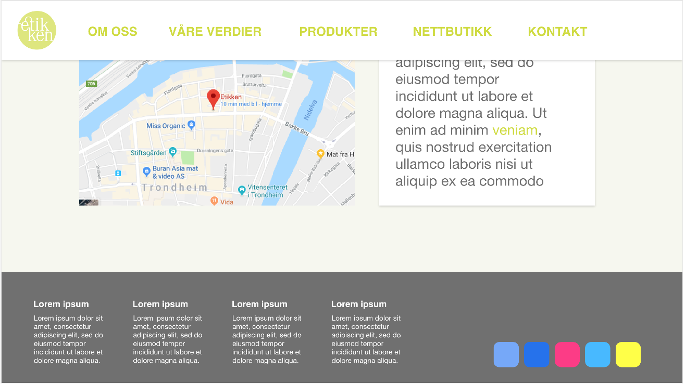
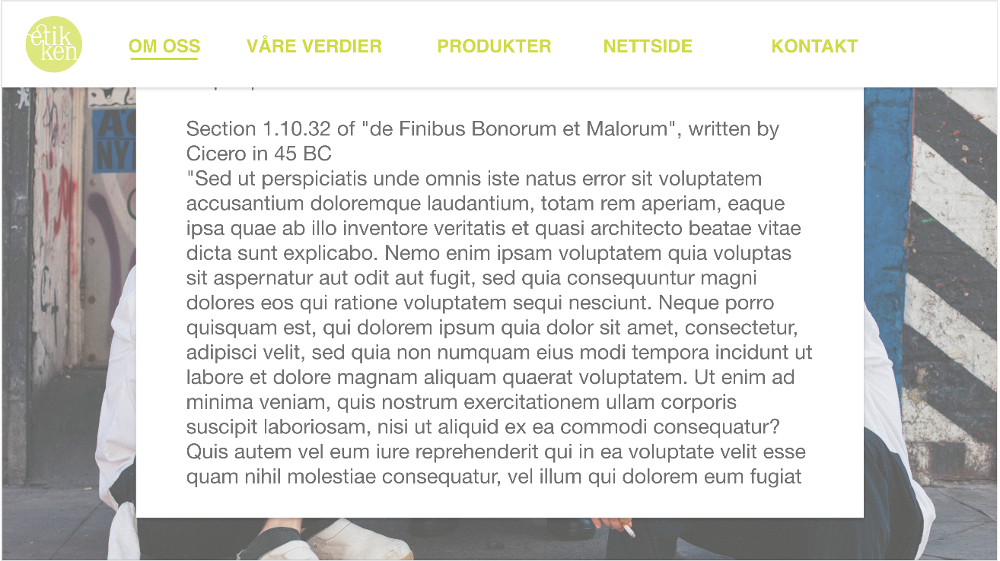

09.10.2018
Vår kunde er Etikken BA, en kolonialbutikk i Trondheim som blant annet tilbyr økologisk, fairtrade og kortreist mat. Kontaktpersonen vår er Alan Lorin, som driver butikken på vegne av sin bror.
Etikken ønsker at flere skal få vite om dem. Målet med denne nettsiden er derfor å øke rekkevidden til butikken. Formålet med nettsiden er å informere flest mulig om hva Etikken er, hva de står for og hvorfor man burde handle der. Publikummet er miljøbevisste personer, som bor både lokalt i Trondheim og andre steder i Norge. De er generelt mellom 20 - 40 år og er derfor nettvante. Dermed trenger ikke nettsiden spesielle tilpasninger. Kunder i nærområde er gjerne interessert i åpningstidene til butikken, mens andre kan nytte seg av den for å finne mer informasjon om Etikken som hvilke produkter de tilbyr.
Vi antar at brukerne av nettsiden er ute etter følgende informasjon:
Åpningstider
Kontaktinfo
Kart/adresse til butikken
Generell info om Etikken (om oss, våre verdier)
Informasjon om hvilke produkter de selger
Bilder av butikken og produkttypene
Link til nettbutikk
Det skal være en felles meny på toppen av hver side som lenker til alle hovedsidene Forside, Om Etikken, Våre verdier, Våre produkter, Kontakt. På den måten kommer brukeren seg direkte til alle sidene uansett hvor de er. Hovedsidene Våre verdier og Våre produkter har undersider som kommer til syne når brukeren beveger musen over disse. Det skal altså være mulig å komme til alle nettsidens sider på ett klikk. Menyen skal være festet slik at den er synlig selv når brukeren scroller nedover. På små skjermer (under 960 px) skal denne erstattes av en hamburgermeny i øverste høyre hjørne. På bunnen av hver side skal det være en liten footer med kontaktinformasjon.
Vi har følgende sidestruktur:
Forside
Kontaktinfo
Om oss
Våre verdier
Flere seksjoner på én side, direkte tilgang via meny
Våre produkter
Link til nettbutikk
Footer med merker og link til sosiale medier m.m.
Forsiden skal bestå av flere “slides” (seksjoner i samme størrelse som vinduet) som kort oppsummerer og linker til de andre sidene på nettsiden. På denne måten kan nye besøkende raskt få et godt overblikk over nettsiden, og da også hva Etikken er og hva de tilbyr. Bakgrunnsbilde på første “slide” (et såkalt “hero image”) er det første de besøkende til nettsiden ser. Det skal være naturbilde av type skog, åker eller liknende, med etikkens logo over for å forsterke Etikkens forhold til det naturlige. Resten av forsiden skal benytte seg av sider av hvit eller lysegrå bakgrunnsfarge med grønntone (eller bilder). Tekstboksene som skal ligge over vil være enten i samme lysegrå med grønntone (#F6F7EF) eller hvitfarge, henholdsvis. For at teksten skal være tydelig uten å skape for skarpt uttrykk er den tillagt en mørk gråfarge (#475351). Dette simplistiske designet skal bidra til å gjøre nettsiden lett forståelig. Navbaren skal ligge horisontalt langs toppen av siden, og skal være fixed slik at den alltid er med. På forsiden skal den starte gjennomsiktig for å så å bli hvit når man scroller nedover (På undersidene er den konstant hvit.). Tekstfargen skal samtidig gå fra hvit til lysegrønn (#CFDB42). Navbaren skal inneholde linker til alle de andre sidene, samt logoen til Etikkens som linker til toppen av forsiden. Navbaren skal ha en liten skygge under seg slik at det er et klart visuelt skille mellom den og resten av innholdet på siden.
Bunntekst skal være lik mellom alle sidene og skal ikke være fixed. Den skal inneholde diverse kontaktinfo, logoer, lenker til sosiale medier, adresser osv.
Siden skal ha en responsiv layout som automatisk tilpasser seg små skjermer (mobiler f.eks.), det vil si skjermbredde under 960 px. Menyen skal da gjøres om til en mobilvennlig hamburgermeny i øverste høyre hjørne. Bilder skal også skaleres til å passe til mobilskjermen.
Fonten som skal brukes er Arial, med Sans-Serif som generell fallback. Dette fordi det gir bokstavene rette ender, noe som fører til et rent design. Dette gir inntrykk av at Etikken er en ren butikk, noe som forsterker identifiseringen med verdiene deres. Tekststørrelsen som brukes er 20px på standardtekst og 50px på overskrifter fordi det gir god lesbarhet for brukeren og skiller tydelig overskrifter og avsnitt fra hverandre. I tekstbokser er størrelsen 1.4em fordi teksten der er ikke like viktig som resten.
Når det gjelder fargevalg tar vi utgangspunkt i fargene i logoen: hvit og ulike grønntoner. Bakgrunnsfargen skal være hvit mens overskrifter og linjer (underline, bokser osv.) skal være grønne. Tekst skal hovedsakelig være mørk grå for å få god lesbarhet, på svært mørke bakgrunner vil tekst være hvit. Overskrifter og annen stor, lett leselig tekst kan repetere Etikkens grønnfarger. Dette vil dessuten gi websiden et helhetlig design.
Nettsiden er designet med hensyn på å fremstille Etikken mer troverdig og profesjonell der vi tar hensyn til Don Normans fundamentale prinsipper for interaksjon; affordances, signifiers, constraints, mappings, og feedback. Vi ønsker en minimalistisk utforming for å skape et rent design. Dette skal reflektere Etikkens verdier: miljøvennlige, bærekraftige og økologiske varer samt rettferdig handel, og skal hjelpe brukerne å identifisere butikkens visjon. Blant annet vil bruken av grønn fremheve dette da fargen ofte assosieres med naturen. Et minimalistisk design vil gjøre at nettsiden er lett å navigere. Rent og enkelt design er også forholdsvis standard hos større bedrifters nettsider som Apple og Telenor, og vil derfor bidra til at Etikken fremstår som profesjonelle og moderne, og vil generelt øke deres etos. Designprinsippene bidrar til et brukergrensesnitt som er lett å bruke og forstå seg på. Vi har definert brukergruppen til å være miljø- og trendbevisste mennesker i aldersgruppen 20-40 år - altså en moden og nettvant gruppe. Vi trenger derfor ikke ta noen spesielle hensyn til fremkommelighet eller lesbarhet utover det som er vanlig. Det er derimot et poeng at siden skal være lett å bruke, uten at det fører til frustrasjon eller negativt inntrykk for brukerne. Dersom nettsiden oppfyller dette kan det føre til en økning i antall kunder for Etikken.
Hele nettsiden skal bruke samme footer og navbar. Navbar skal inneholde Etikkens logo (linker til forsiden) og tekstlinker til resten av undersidene av etikken. “Våre verdier”-knappen på navbaren skal være en dropdown-meny som aktiveres på hover. Navbar skal være fixed til toppen av nettsiden slik at den alltid er synlig. Footeren skal ligge på bunnen av alle sidene, og skal inneholde diverse informasjon som samarbeidspartnere, linker til sosiale medier, kontaktinfo, adresse osv. Den skal ikke være fixed, men kun være synlig når man scroller til bunn av siden.
Bildene vi bruker på nettsiden skal lagres i opptil 3 versjoner i ulike oppløsninger. Store bilder for desktop-bruk, litt mindre bilder for mobilklienter (det vil si med skjermbredde under 960 px) og en enda mindre thumbnail-versjon for enkelte bilder (som kan klikkes på for å få opp en større versjon).
Forsiden er det første som vil møte brukeren når den besøker nettsiden. I tråd med universell utforming av nettstedet, vil vi holde forsiden iøynefallende og behagelig, men samtidig raskt gi et godt overblikk over informasjonen som er å finne på nettsiden. På denne måten vil vi oppfordre brukere til å utforske nettstedet nærmere. Vi vil derfor holde teksten til et minimum og la bildene ta oppmerksomheten til brukeren. Forsiden viser et større bilde og gir brukerne en forhåndsvisning av innholdet på nettsiden med en kort presentasjon av Etikken og undersidene med bilder og lenker til undersidene.
Undersiden “Om oss” er en side som forklarer brukeren hva Etikken er. Den forteller blant annet hva de gjør og hvordan de oppsto. Det skal også være et bakgrunnsbilde av de ansatte eller butikken fra innsiden. Denne siden hjelper oss å oppnå målet om å informere om hva Etikken er.
Undersiden “Våre verdier” er en lengre tekst om Etikkens verdier og mål. Den inneholder avsnitt om bærekraftighet, miljøvennlighet, økologisk mat, rettferdig handel og Debbies gullmerke. Det skal være et bakgrunnsbilde av noe som forbindes med verdiene deres. Siden skal være utformet slik at brukerne lett kan få oversikt over Etikkens verdier og kan navigere seg gjennom dem.
Undersiden “Våre produkter” inneholder noen bilder og beskrivelser av varetyper og enkelte spesifikke produkter. Her må vi enten ta bilder selv eller få tilsendt egnede bilder fra kunden. For å sikre at sidene lastes raskt, vil vi sørge for at hver bildestørrelse er mindre enn 200 kB. Når bildene klikkes på vil de bli forstørret 300%. Det ska også være etDette hjelper oss å oppnå målet om å informere om hva Etikken er.

Undersiden “Kontaktinfo” inneholder butikkens kontaktinformasjon. Der finner man blant annet e-post, telefon, link til sosiale medier og adressen til butikken. I tillegg skal det være et lite kart som viser hvor butikken ligger, vist med Google Maps ved bruk av API. Dette hjelper oss å oppnå målet om å informere om hva Etikken er.
Teksten skal vises i én rute, mens kartet skal vises i en litt mindre rute til høyre for teksten. Siden skal ha et bakgrunnsbilde som viser hvordan butikken ser ut fra gateplan.
Vi planlegger å implementere følgende funksjoner ved hjelp av JavaScript:
Funksjon menuExpander.js som sørger for at menyen utvider seg (dropdown) på hover for å vise undersider/seksjoner. Vi har denne funksjonen for å sørge for at menyen blir tilpasset siden. Jonatan har ansvaret for denne.
Funksjon menuAnimation.js som sørger for at menyelementer animeres på hover (en border under som utvider seg?). Vi har denne funksjonen for å sørge for at menyen blir tilpasset siden. Denne skal også endre stil/farge på navbar når man scroller. Håvard har ansvaret for dette.
Funksjon commonMenu.js som sørger for at det er en felles meny/navbar for alle sidene, og også felles footer for alle sidene. Vi har denne funksjonen for at nettsiden ser lik ut på alle sider og fungerer for alle sidene. Lars-Olav har ansvaret for dette.
Funksjon imageExpander.js som sørger for at det blir åpnet større versjoner av thumbnail-bilder når de klikkes på. Vi har denne funksjonen for å sørge for at brukeren får se alle bilder ordentlig uten at det tar opp for stor plass på nettsiden. May har ansvaret for dette.
Funksjon slideshow.js som sørger for at det er et slideshow av bilder for noen av undersidene på framsiden. Vi har denne funksjonen for å sørge for at brukeren får se alle bilder uten at det tar opp for stor plass. Marte har ansvaret for dette.
Alternativer til flere funksjoner vi kan implementere om nødvendig:
“Les mer”-knapp for å utvide tekstbokser
Pil for å scrolle nedover fremsiden
Vi kommer til å organisere siden og arbeidsfordeling med følgende filstruktur og arbeidsplan.
index.html
contact.html
about.html
values.html
products.html
css/
style.css
img/
logo.svg
mobile/
hero_image.jpg
store.png
product_example1.jpg
product_example2.jpg
...
desktop/
hero_image.jpg
store.png
product_example1.jpg
product_example2.jpg
…
thumbnails/
product_example1.jpg
product_example2.jpg
…
scripts/
menuExpander.js
commonMenu.js
slideshow.js
menuAnimation.js
imageExpander.js
Hva |
Hvem |
Deadline |
| HTML og CSS | ||
|
index.html + custom css |
Håvard |
22/10 |
|
contact.html + custom css |
Lars-Olav |
22/10 |
|
about.html + custom css |
Marte |
22/10 |
|
values.html + custom css |
May |
22/10 |
|
products.html + custom css |
Jonatan |
22/10 |
|
style.css |
Alle |
29/10 |
| JavaScript | ||
|
menuExpander.js Lager en dropdown-meny for å vise underseksjoner |
Jonatan |
29/10 |
|
commonMenu.js Felles meny/footer for alle sider |
Lars-Olav |
29/10 |
|
menuAnimation.js |
Håvard |
29/10 |
|
slideshow.js Slideshow på forsiden |
Marte |
29/10 |
|
imageExpander.js |
May |
29/10 |
| Kontroll og innlevering | ||
|
Innlevering P2 |
Alle |
9/10 |
|
Siste kontroll |
Alle |
5/11 |
|
Siste innlevering |
Alle |
11/11 |
Material vi trenger for å få fra klienten og når vi forventer å få det:
Hva |
Når |
|
Tekst til “Om oss”, “Våre verdier” og “Produkter” |
Oktober |
|
Bilder av butikken og produktene |
Oktober |